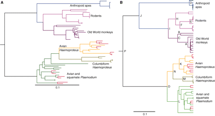

| email - August 2010 |
Cladistics is a rhetorical tool, not scientific proof.
Cladistics is a method for inferring evolutionary relationships based on shared characteristics. In our last April Fool parody newsletter, we showed the unreliability of this method by creating a silly evolutionary tree of gray animals. 1 We intentionally made foolish choices about which characteristics to use, which naturally produced a foolish tree. Karl wrote to tell us it sparked a discussion on a forum.
|
This was a comment given on a forum in a discussion about cladistics where your article "Foolish Relationships" was brought up. I would guess you don't get many comments from evolutionary biologists, so I thought I would pass this on to you. |
He's right. We didn't get any comments directly from any evolutionary biologists. Here is the substance of the comment he passed on to us. We have deleted all the irrelevant stuff about what an idiot I am and how silly our silly example was, and present the single paragraph containing the technical criticism of our article.
|
Whatever is at the bottom of the tree must be common to ALL of the descendant groups. (As we see in the whiting [sic] example) Any that are missing that characteristic must have subsequently lost it (frequently they will contain vestigial versions of the trait or show it during the embryonic phase). Additionally, in cladistics we look for maximum parsimony, that is if a new trait evolves, it is more parsimonious to assume it evolved few times rather than many, the same goes for loss of a characteristic. Nor are phylogenetic trees made based on single *arbitrary* characteristics. |
This sounds very good in theory, but it doesn't work quite that way in practice.
He makes it sound like you can find one characteristic common to everything. In practice, the one common characteristic is so vague it is useless. (For example, "They all contain carbon atoms.") In practice, there will be several important characteristics that are common to almost all groups. You will have to choose one of them as the base. That choice will be a major factor determining the shape of the tree. Then you have to decide the next most important characteristic shared to divide everything into two groups. Each choice you make determines subsequent choices that shape the tree.
Try it for yourself. Try to make a phylogenetic tree of all the items in a grocery store. At the base of the tree, we know that everything sold in a grocery store is food. (Oops! They sell toilet paper and laundry detergent, so we need to pick something else.) Perhaps the real base of the tree is that all the items for sale in a grocery store have a price associated with them. That's true, but not very helpful. Still, it is a start. Where do you go from here? You choose.
Sooner or later, you will get down to the breakfast cereal family. What is the characteristic some cereals have that others don't? A lot of added sugar seems like a logical choice; but is that any more logical than the completeness of required vitamins? What about the presence or absence of corn?
In theory, it sounds so straightforward, but when you actually try to do it, you discover that lots of subjective choices have to be made. Our example is admittedly silly, but it does illustrate our point. One has to make subjective decisions. The choices aren't as clear-cut as evolutionists would like you to believe. That's why Rokas came up with the 12 different, "robustly supported alternative" evolutionary relationships we quoted in our April Fool article. 2
One of the reasons why cladistics doesn't work is that it is based on the assumption of evolution. The unknown biologist who wrote to the forum said, "Any [subgroups] that are missing that characteristic must have subsequently lost it." If evolution were true, then the method would work perfectly every time. It doesn't work because evolution isn't true.
One could argue that our grocery store example doesn't work because the foods found in the grocery store didn't evolve from each other. That's exactly our point. If they make the erroneous assumption that grocery store items evolved from each other, different people will assume different evolutionary relationships based on what characteristics they use. The result will be different evolutionary trees.
Tools can be misused. A heavy pipe wrench can be used to drive nails. It just doesn't work very well. Cladistics is just another tool that can be misused. Things can be organized in a logical way by cladistics, regardless of whether they evolved or not; but there are multiple ways things can be classified, some of which are more logical than others. Not everyone will agree on the most logical way because it is a matter of opinion.
If the theory of evolution really were true, then there would be one unquestionable way to build the tree of life. There isn't just one way because living things didn't evolve from other living things any more than the items in a grocery store evolved from other items. The lack of a clear evolutionary tree of grocery store items is because evolution didn't produce them. The lack of a clear evolutionary tree of life is because evolution didn't produce them.
The assumption of degrees of difficulty of evolution is clear in the statement, "Additionally, in cladistics we look for maximum parsimony, that is if a new trait evolves, it is more parsimonious to assume it evolved few times rather than many, the same goes for loss of a characteristic." There is an underlying assumption of how difficult it is for a particular characteristic to evolve.
Some characteristics, like a different color, size, or shape, are presumably easier to evolve than eyesight, flight, mammary glands, or radically different reproductive system. Therefore, they assume that the difficult things evolved less frequently than the easy things did; but that all boils down to a subjective judgment about what can evolve easily.
The reason why whales and dolphins are classified with land mammals is because it is assumed that mammary glands only evolved once. Presumably it was more difficult for a fish to evolve breasts than it would be for a wolf to evolve the ability to live in the water.
Bats and dolphins both presumably evolved echolocation. If one assumes that it would be really hard to evolve the signal processing necessary to determine range and bearing from the phase difference in sound waves, and relatively easy to evolve flight, it would imply bats evolved from dolphins. It all depends on assumptions.
Flight is assumed to have evolved independently in mammals, birds and insects (and extinct reptilian creatures). If one assumes flight only evolved once, it changes the shape of the tree of life.
Clearly the decisions one makes about maximum parsimony determine the shape of the tree of life. If there are different possible trees of life, then at least all but one are wrong. But it doesn't matter to evolutionists if the tree is right or not. "Everybody" agrees there must be a tree, which is all that matters to them.
One has to "look for maximum parsimony" because parsimony is in the eye of the beholder. Rokas found twelve different possible maxima when analyzing yeast genes. Someone else, looking at yeast from a physical (rather than genetic) point of view, might have come up with even more possible evolutionary relationships.
If you read blogs, or high school biology texts, you will get the idea that cladistics is simple, straight-forward, and gives consistent results. But if you read the professional literature you will discover that isn't true.
As an experiment, we decided to search the journal Science for the word "cladistics" to find the three most recent articles using that term. We wanted to see how many different trees those authors would present in the three most recent peer-reviewed articles dealing with the subject.
The most recent article was "Bioluminescence in the Ocean: Origins of Biological, Chemical, and Ecological Diversity" by E. A. Widder, 7 May, 2010. It turned out that the word "cladistics" didn't actually appear in the article itself. It was in footnote references 33 and 34, which referred to articles in the journal Cladistics. The gist of the main article and the two referenced articles was that there are a surprising number of sea creatures that glow in the dark, and there isn't an obvious evolutionary connection because they are so distantly related (by other traditional criteria). They, of course, didn't even mention fireflies or glow worms because they aren't sea creatures. Imagine how the evolutionary tree would differ if biologists assumed that bioluminescence evolved only once. They didn't even try to draw a cladogram.
The second article in our search was an article about the evolutionary relationship between birds and dinosaurs. Again, it popped up because it referenced another article in the journal Cladistics. The abstract of this article said,
|
The fossil record of Jurassic theropod dinosaurs closely related to birds remains poor. A new theropod from the earliest Late Jurassic of western China represents the earliest diverging member of the enigmatic theropod group Alvarezsauroidea and confirms that this group is a basal member of Maniraptora, the clade containing birds and their closest theropod relatives. It extends the fossil record of Alvarezsauroidea by 63 million years and provides evidence for maniraptorans earlier in the fossil record than Archaeopteryx. The new taxon confirms extreme morphological convergence between birds and derived alvarezsauroids and illuminates incipient stages of the highly modified alvarezsaurid forelimb. 3 |
The popular evolutionary propaganda would have you believe that the evolutionary link between birds and dinosaurs is undeniable. But the real technical literature says the fossil evidence, as recently as January 2010, "remains poor." And, as usual, the most recent fossil find changes what was previously believed about the evolutionary tree.
We really hit pay dirt with the third most recent article. It was an article by a biologist trying to refute the criticism of another biologist regarding his cladistic analysis. It is a short letter, so we will show it to you in its entirety.
|
Whiten et al. imply that we undervalued extant species. We find this perplexing. We never stated that studies of extant chimpanzees are unimportant. Our conclusions were based on intensive review of homologous anatomical traits in other primates. Indeed, to understand hominid origins, we must now instead rely on "fundamental evolutionary theory," which Whiten et al. refer to as "strategic modeling." Increasingly relevant is a vast and still growing knowledge of ecological, locomotor, social, and reproductive interrelationships of not just chimpanzees, but other primates and a wide variety of other vertebrates. In fact, using "data on extant species...to derive general principles" was exactly our approach--the majority of the 108 citations in the final Ardipithecus paper referenced such studies. We expressly advocated more intensive reliance on additional living species (beyond Pan) because these promise a more comprehensive understanding of social structure in advanced K primates (e.g., Brachyteles and other atelines), creation and use of tools (e.g., Cebus), and even neuroendocrinology (voles and several primates). A broad comparative base is equally imperative for accurate phylogenetic analyses, particularly those involving cladistics. The potential of the latter methods to accurately "recover" ancestral phenotypes by parsimony relies on the presence and density of taxa (both extinct and extant) surrounding the nodes of interest. This has been empirically shown with morphological data sets (1) and certainly also applies to behaviors. For example, cladistic analysis of extant species may retrieve the locomotor behavioral trait of knuckle-walking, as the nodal phenotype for the Pan/Homo common ancestor, but the Ardipithecus forelimb shows that this inference is simplistic and almost certainly incorrect. Indeed, Ardipithecus and other Miocene hominoids establish that extant chimpanzees are poor models for our last common ancestor with chimpanzees. Contrary to Whiten et al.'s assertions, this conclusion was informed, and should be further extended, by general principles established from all relevant species. All great ape species merit study and conservation, but despite their genomic proximity, none of them should be interpreted as anatomically or behaviorally "living fossils" or "time machines." 4 |
You may not understand the argument in detail, but hopefully this much will be clear to you: There is a difference of opinion regarding what is important when trying to create a human evolutionary tree. They are arguing about the importance of behavior of living creatures compared to the shapes of bones of extinct creatures when trying to determine evolutionary relationships. What one scientist considers important, another scientist considers "simplistic and almost certainly incorrect."
Our experiment with the three articles didn't turn out exactly as we expected. We expected to find alternative cladistics diagrams. None of the three articles contained any because we searched badly. We should have just looked at last month's issue of Science, and noted thse two different trees.
 |
Fig. 3. Phylogenetic trees for representative haemosporidian cytochrome b sequences. (A) Tree produced by maximum likelihood optimization under a GTR + {Gamma} model of nucleotide evolution. (B) Tree produced under a GTR + {Gamma} model of nucleotide evolution using a strict clock. Letters in (B) indicate aged nodes (see Table 1). Calibration pairs in both panels are indicated in red. 5 |
It should be clear from all four articles that cladistic analysis is extremely subjective, and highly dependent upon prejudice. A scientist has a presumed model of evolution, and looks for a way to prove his presumption.
Cladistics isn't science--it's a rhetorical tool. Cladistics simply gives people a tool to argue why they think their opinion is more valid than someone else's opinion. It exposes assumptions and logical conclusions based on those assumptions.
Cladistics are important because they help people explain why they believe what they believe. But it is still just a belief, an opinion. It's philosophy, not science. The fact that the people making the philosophical argument happen to be scientists doesn't make their argument scientific.
There's nothing wrong with philosophy. It is important to ponder the mysteries of life. Over the centuries many philosophers, all very smart people, have come to contradictory conclusions. There certainly is value in learning what various philosophers have thought, and how those ideas can shape values and behavior.
The problem is that the theory of evolution is philosophy disguised as science, and the American legal system is being used to censor all criticism of that philosophy through a bogus argument of science versus religion.
Children are being taught that it is scientific to believe that chemicals can somehow come together through some unknown natural process to create the first living thing. That's not scientific.
Children are being taught that random changes to DNA produce new information, which produces complex biological systems (digestion, cardio-vascular, optics, nerves). That's not scientific.
Perhaps the most dangerous thing children are being taught is to believe that things contrary to known physical laws are true, just because "scientists say" they are true. Children are being told that scientists don't know all the answers yet, but someday they will, so just trust that the proof will be forthcoming.
All these things dishonor our children and discredit real science.
| Quick links to | |||
|---|---|---|---|
| Science Against Evolution Home Page |
Back issues of Disclosure (our newsletter) |
Web Site of the Month |
Topical Index |
Footnotes:
1
http://www.scienceagainstevolution.org/v14i7f.htm
2
http://www.scienceagainstevolution.org/v14i7f.htm#twelve
3
Choiniere, et al., Science, 29 January 2010, "A Basal Alvarezsauroid Theropod from the Early Late Jurassic of Xinjiang, China"
4
Lovejoy, et al., Science, 22 January 2010, "Studying Extant Species to Model Our Past--Response", pp. 410 - 411
5
Science, 9 July 2010, "A Molecular Clock for Malaria Parasites", page 227